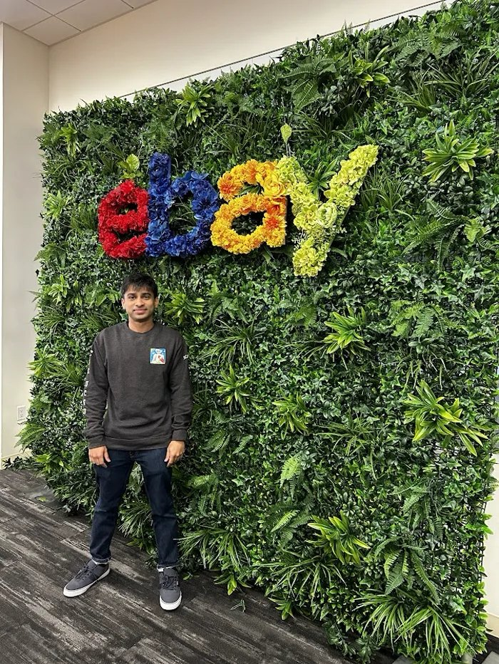
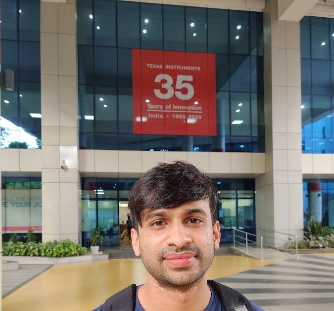

Hi, I’m San.
I work on language models at eBay. Before that: computer science at UC San Diego, chip design at Texas Instruments, and electrical engineering at NIT Karnataka. Along the way I co-founded a startup that didn’t make it. I also write, make things, and sometimes turn an idea into a film.
More about mesan@sankala.mePlain version
The desk is drawn in pixels, in code, and keeps San Jose time. Scroll, and it goes back through the places I’ve lived and worked.
My path so far
San Jose
AI research at eBayFirst place at the NeurIPS EAI Challenge
Chin and I won first place in the NeurIPS 2025 Embodied Agent Interface Challenge, as team AxisTilted2. We built language-model agents that reason about physical tasks in simulated environments.

Joined eBay as an AI researcher
I joined eBay’s Knowledge Extraction team in April 2024, where I research and build language-model systems for information extraction. I was promoted in October 2025.

San Diego
MS in computer science, UC San DiegoCompleted my MS at UC San Diego
I completed an MS in computer science at UC San Diego, working with Julian McAuley’s group on AI music and language models and TA’ing recommender systems and data mining.

A UIST award for turning papers into zines
ZINify, which Jaidev Shriram and I built, received an Honorable Mention at the UIST Student Innovation Contest. It uses language models to turn research papers into illustrated zines.

A writing-assistant startup at UCSD’s StartR accelerator
I co-founded Glyp, a writing assistant for novelists, and took it through UCSD’s StartR Rady accelerator. It didn’t make it to market, and I wrote about what went wrong.
A summer research internship at eBay
I spent the summer researching information extraction at scale with eBay’s Knowledge Extraction team.

Won the eBay ML Challenge: first of 591 teams
I placed first of 591 teams in the eBay University Machine Learning Challenge, extracting named entities from product titles with DeBERTa-v3 and K-fold ensembling. The result, announced in January 2023, led to the summer research internship.
Moved from chip design to computer science at UCSD
I started the MS at UC San Diego after three years in chip design.


Bengaluru
Chip design at Texas InstrumentsThree years designing chips at Texas Instruments
I spent 2019–2022 on ASIC digital design at Texas Instruments: physical design, RTL, and getting actual chips out the door.


Surathkal
Electrical engineering at NIT KarnatakaElectrical engineering at NIT Karnataka
I graduated in electrical and electronics engineering. I got into deep learning through Kaggle, earning silver and bronze medals. My thesis on power-quality classification won a best-paper award at IEEE DISCOVER, and the Amateur Astronomy Club gave me a place to explore astronomy.